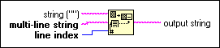

Pick Line Function
Owning Palette: Additional String VIs and Functions
Requires: Base Development System
Chooses a line from multi-line string and appends that line to string.
The connector pane displays the default data types for this polymorphic function.

 Add to the block diagram Add to the block diagram |
 Find on the palette Find on the palette |